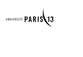

Retour vers la page d'acceuil

Le Master mention « ingénierie & innovation en images & réseaux » permet aux etudiants d'acquerir une double competence en ingenierie des reseaux et traitements d'images, à finalité professionnelle ou recherche, selon deux parcours (images & réseaux) en M2.